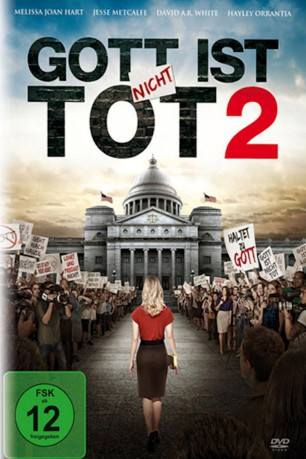

gesehen am 26.09.2016
gesehen am 26.09.2016Alternativ: God's Not Dead 2 gesehen am 26.09.2016
 
 IMDB-Wertung: 4.0 / 10
IMDB-Wertung: 4.0 / 10  Metascore:
Metascore: 
Die christliche Geschichtslehrerin Grace Wesley reagiert im Unterricht auf die Frage ihrer Schülerin Brooke, die sich auf Jesus Christus bezieht. Ihre logisch begründete Antwort wird von einem ihrer Schüler missverstanden und führt durch eine leichtsinnig verschickte SMS an einen Elternteil zu immensen Kontroversen in Bezug auf religiöse Ansichten der Welt und letztendlich zu einem Gerichtsprozess von unvorstellbaren Ausmaßen, der Grace nicht nur ihren Job als Lehrerin kosten könnte. Bei den Gerichtsverhandlungen muss Grace sich nicht nur gegen eine fanatische Bürgerrechtsgruppe, sondern auch gegen den Direktor ihrer Schule, durchsetzen. Mithilfe ihres Anwalts Tom Endler kämpft Grace verzweifelt um ihre Stelle als Lehrerin und um ihr Ansehen als Christin...
Jahr: 2016
Dauer: 120 Minuten
FSK: 12
Land: USA Studio: Pure Flix EntertainmentTonspuren: DTS - ,
Untertitel: Deutsch,
Auflösung: 1080p (1920x800) Größe: 5488 MB
Genre: Drama
Regisseur: Harold Cronk
Drehbuch: James DeMonaco
Soundtrack:
Darsteller:
 Maria Canals-Barrera als Catherine Thawley
Maria Canals-Barrera als Catherine Thawley Ernie Hudson als Judge Robert Stennis
Ernie Hudson als Judge Robert Stennis Trisha LaFache als Amy Ryan
Trisha LaFache als Amy Ryan Jesse Metcalfe als Tom Endler
Jesse Metcalfe als Tom Endler Carey Scott als Richard Thawley
Carey Scott als Richard Thawley Fred Dalton Thompson als Senior Pastor
Fred Dalton Thompson als Senior Pastor Ray Wise als Peter Kane
Ray Wise als Peter Kane Verda Davenport als First Teacher
Verda Davenport als First Teacher Abigail Duhon als Jessica
Abigail Duhon als Jessica Jenn Gotzon als Fashionista
Jenn Gotzon als Fashionista Gianna Simone als Elizabeth Healy
Gianna Simone als Elizabeth HealyDatei: X:\3-Trilogie(G-M)\Gott ist nicht tot\Gott ist nicht tot 2 (2016, FSK12, 1920x800).mkv seit 26.09.2016
Festplatte: HD Collection-2(A-Z)-3(A-M)
 Alle Filme aus Gruppe '3-Trilogie(G-M)\Gott ist nicht tot'
Alle Filme aus Gruppe '3-Trilogie(G-M)\Gott ist nicht tot'